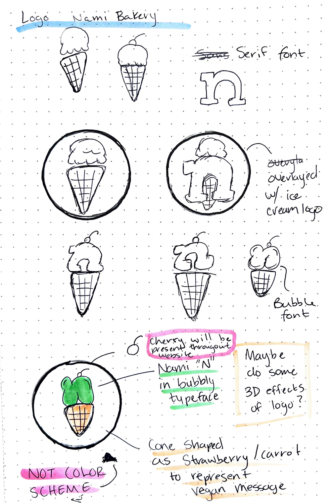
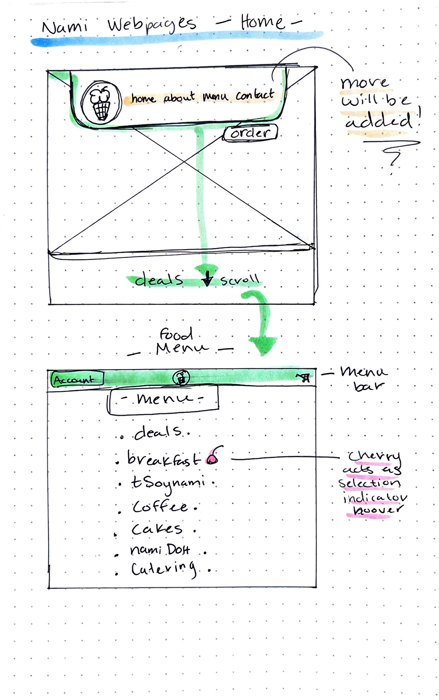
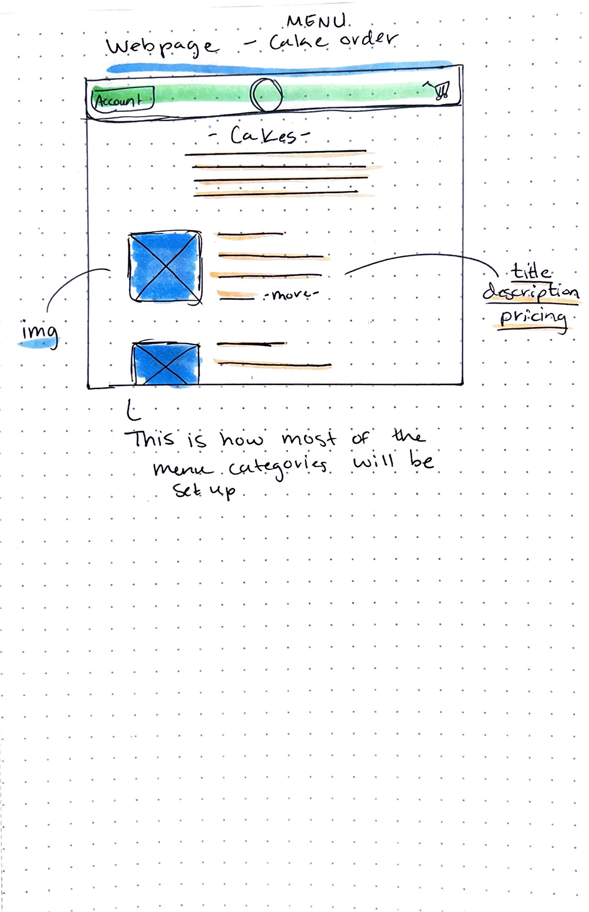
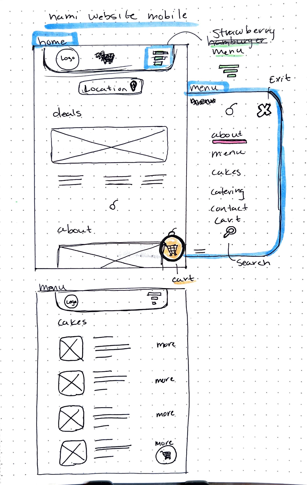
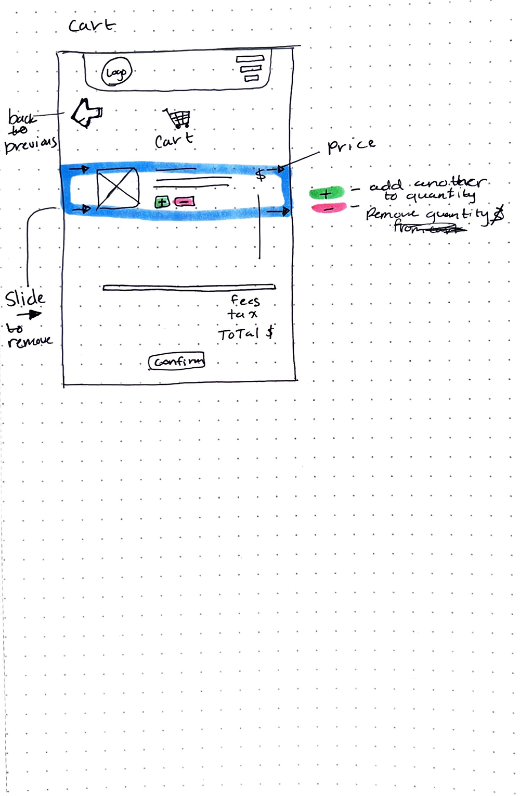
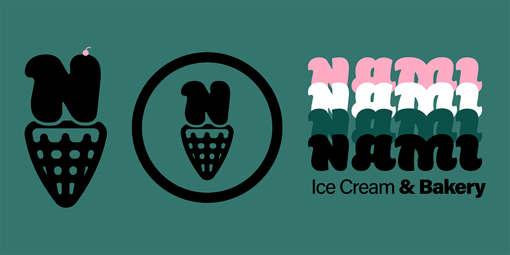
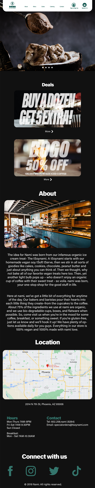
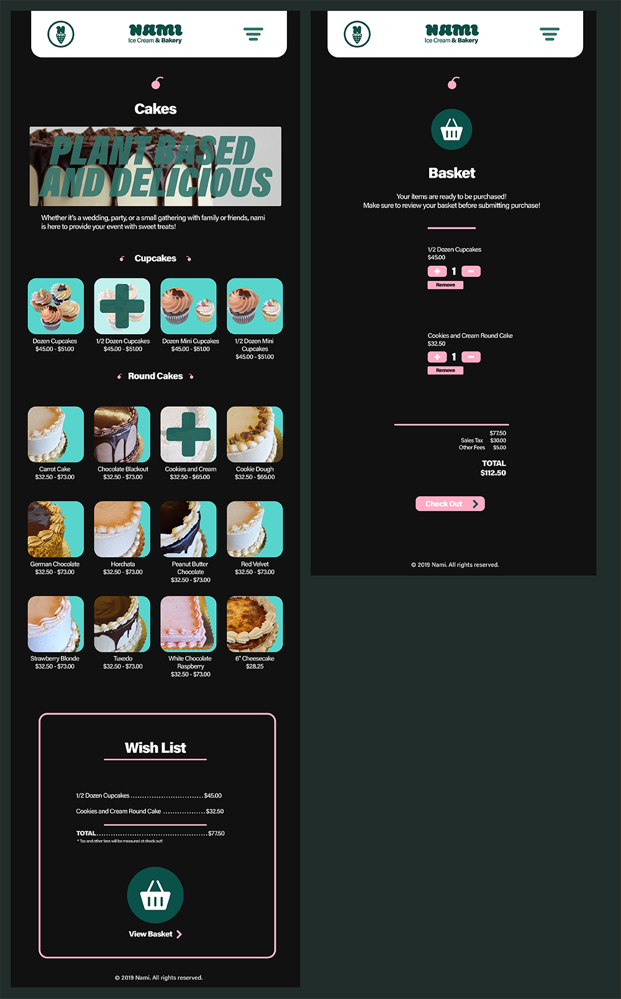
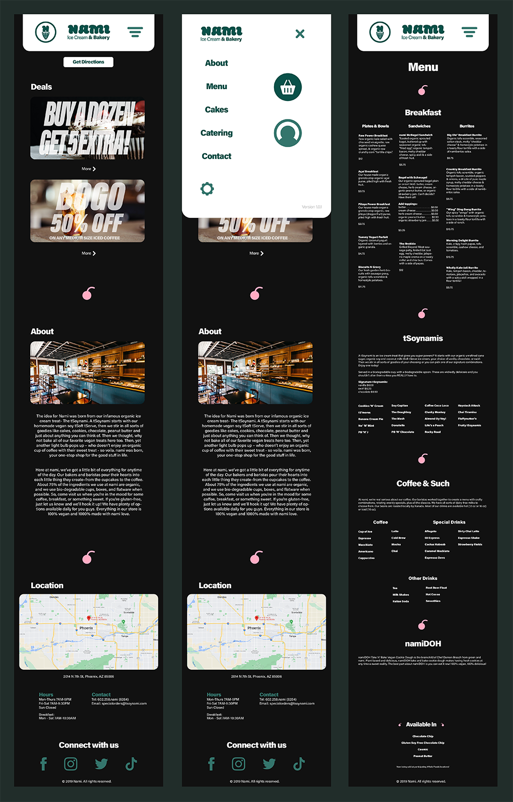

NAMI Bakery is a bakery located within Phoenix, Arizona. The bakery is known for selling vegan items including cakes, cupcakes, ice cream, and other pastries. The bakery recently developed an edible cookie dough named 'namiDOH' which is vegan and cruelty free. The idea behind this project was to find a brand and rebrand it. For my senior project, at ASU, I decided to rebrand and redesign Nami Bakery. I gathered a theme for it, an idea of how I would redesign the architecture, the logo, the color scheme, and the website (view essay). I then drafted some ideas of the logo and website. I went into Photoshop and Illustrator and begun creating the elements for the brand and for the website. I chose to create a website visual for a desktop, a tablet, and a mobile smartphone.
Logo Draft

Desktop Draft

Desktop Draft 2

Mobile Draft

Mobile Draft 2

Finalized Logo

Desktop

Tablet

Mobile App
